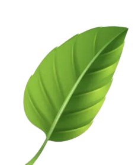
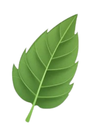

Viajem Sustentável, Viva a Serra
Experiências guiadas pela natureza, cultura e história da Serra-ES, com responsabilidade ambiental e valorização da comunidade local.


Experiências guiadas pela natureza, cultura e história da Serra-ES, com responsabilidade ambiental e valorização da comunidade local.
A Refúgio da Serra é uma empresa de turismo sustentável focada em criar experiências que conectam pessoas à natureza, à cultura e à história da Serra-ES.
Nosso propósito é mostrar que é possível viajar com conforto, segurança e consciência ambiental. Atuamos com grupos pequenos, guiamento profissional e parcerias locais para gerar impacto positivo.
Todos os nossos roteiros são pensados para respeitar o meio ambiente, fomentar a economia local e oferecer ao viajante uma vivência autêntica e memorável.
Roteiros planejados para reduzir impactos ambientais e incentivar boas práticas em trilhas e praias.
Equipe treinada e apaixonada pela Serra, com conhecimento em história, geografia e educação ambiental.
Trabalhamos com restaurantes, cafés e produtores da região, fortalecendo a economia local.
Protocolos de segurança, kits de primeiros socorros e equipamentos específicos para cada tipo de roteiro.

Um dos maiores patrimônios históricos do Espírito Santo, com vista para o mar e história viva em cada detalhe.
Ver pacotes →
Montanha icônica da Serra, com trilhas, mirantes e ecossistemas únicos da Mata Atlântica.
Ver ecoturismo →
Gastronomia local, mar calmo e pôr do sol inesquecível — ideal para relaxar com responsabilidade ambiental.
Ver sol & praia →Escolha o pacote que mais combina com o seu momento: descanso à beira-mar, imersão cultural ou aventura ecológica.
Roteiro completo pelas principais praias da Serra, com foco em conforto, gastronomia e preservação ambiental.
Ideal para famílias, casais e grupos que querem curtir o litoral com tranquilidade e responsabilidade.
Um mergulho na história, fé e gastronomia da região, conectando passado e presente em cenários únicos.
Perfeito para escolas, grupos religiosos, amantes de história e quem quer conhecer a Serra além das praias.
Para quem quer subir o Mestre Álvaro com segurança, suporte profissional e contato intenso com a natureza.
Podemos ajustar o nível da trilha e incluir itens extras no kit (ex: bastão de caminhada, capa de chuva, etc.).
A empresa Refúgio da Serra se compromete: com responsabilidade social, ambiental e foco em educação ecológica.
“A experiência foi incrível! Dá pra imaginar exatamente como seria fazer esses passeios na Serra.”
“Os roteiros são muito bem pensados, misturando praia, cultura e montanha. Excelente referência de layout para sites de turismo!”
“Gostei da proposta de turismo sustentável e da forma como as informações estão organizadas. Muito útil para apresentar para clientes.”
📝 No Refúgio da Serra, iniciamos com um briefing detalhado para entender suas necessidades. Depois desenvolvemos o conceito inicial, enviamos para sua avaliação e realizamos os ajustes necessários. Após a aprovação final, entregamos todo o material pronto no formato combinado.
💰 Sim. Os valores são uma base inicial e podem variar conforme o nível de complexidade, detalhes solicitados e prazos de entrega. Projetos mais elaborados podem exigir um orçamento personalizado.
🔄 Sim! Incluímos um número específico de revisões em cada pacote. Caso sejam necessárias revisões extras além do previsto, elas podem ser solicitadas por um valor adicional.
⏳ Os prazos variam conforme o pacote: Sol e Praia leva cerca de 1 dia para execução, Cultural dura 1 dia completo e Ecoturismo pode chegar a 6–10 horas de trilha. O planejamento de cada roteiro leva de 1 a 4 dias úteis, dependendo da complexidade.